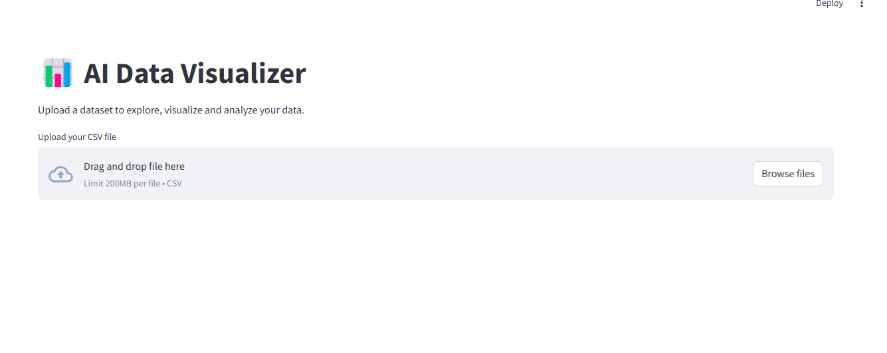
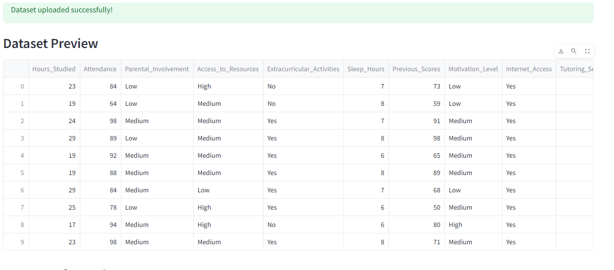
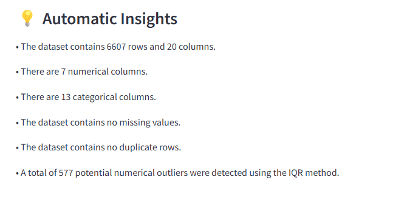
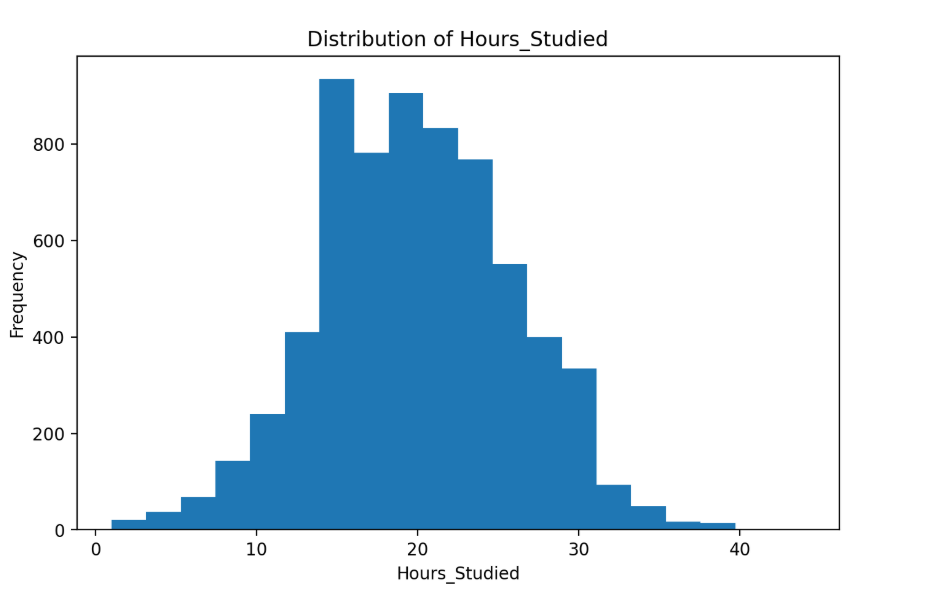
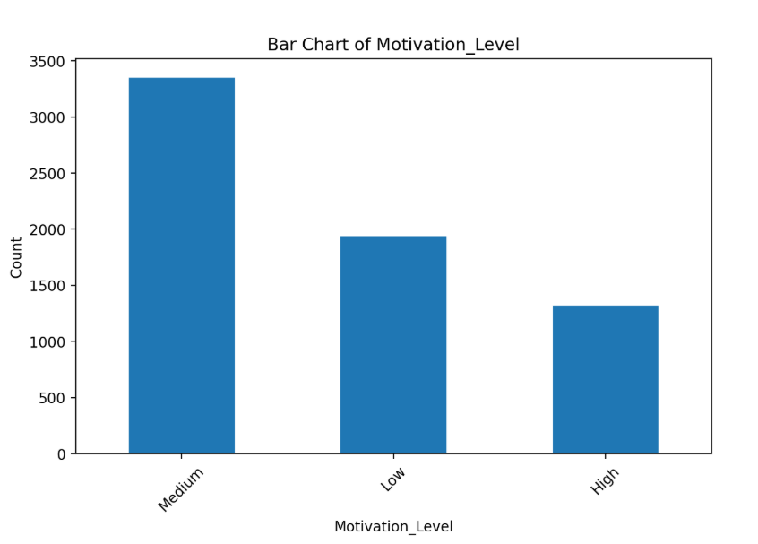
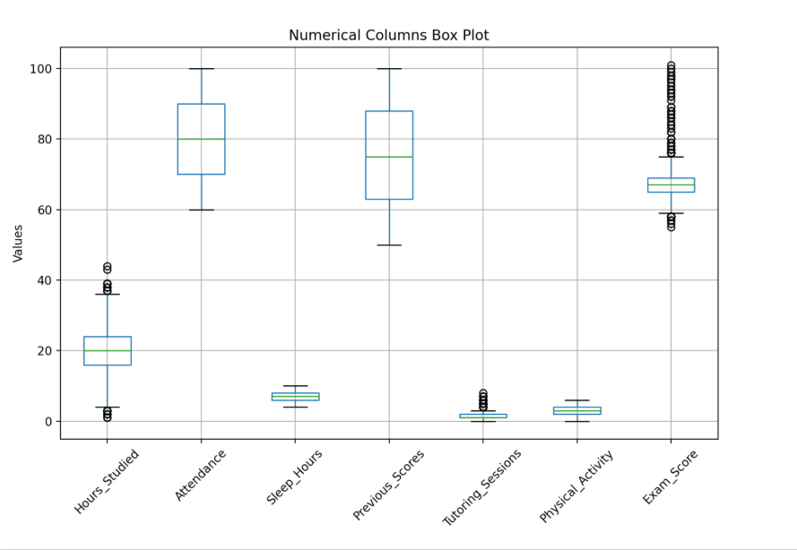
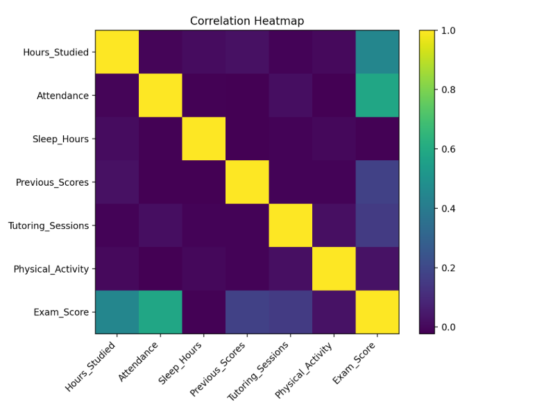
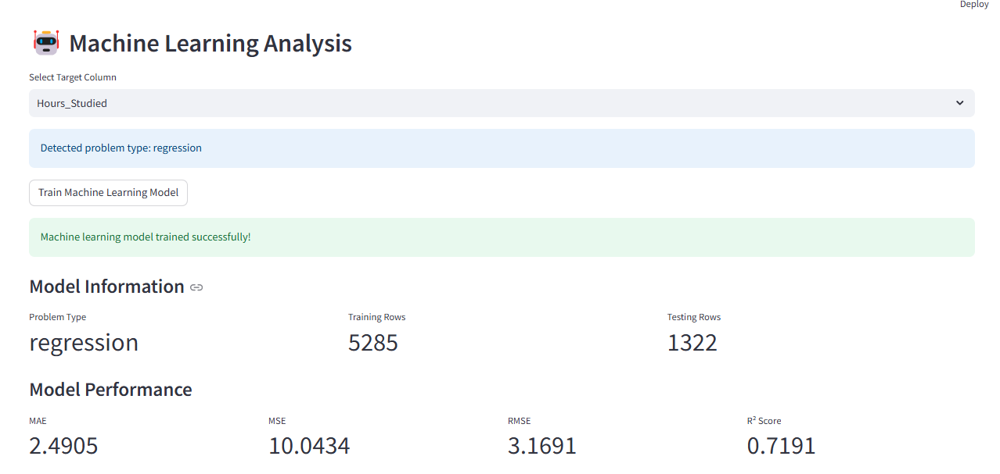

AI Data Visualizer
A Python-based data analysis and visualization platform designed to simplify the process of exploring datasets, generating insights, and applying machine learning.
Project Overview
AI Data Visualizer is a Python-based data analysis and visualization platform designed to simplify the process of working with datasets. The project combines data preprocessing, exploratory data analysis, visualization, machine learning, and automated insights into a single workflow.
The system allows users to load a dataset, clean and analyze the data, generate meaningful visualizations, train machine-learning models, and understand important patterns and insights from the dataset through an interactive interface.
Objective
The main objective of the project is to make data analysis easier and more accessible by combining multiple stages of the data science workflow into one platform.
Instead of performing data loading, cleaning, analysis, visualization, and machine learning separately, the project brings these processes together into a structured pipeline.
Key Features
- Dataset loading and processing
- Automated data cleaning
- Exploratory Data Analysis (EDA)
- Statistical analysis
- Data visualization
- Missing-value detection and handling
- Identification of important data patterns
- Machine-learning model training
- Model evaluation
- Automated dataset summarization
- Interactive dashboard
- Report generation
Data Processing
The system first loads the dataset and examines its structure. It identifies important characteristics such as columns, data types, missing values, duplicates, and other potential data-quality issues.
The cleaning stage prepares the dataset for further analysis and machine-learning tasks.
Exploratory Data Analysis
The platform performs exploratory analysis to understand the underlying structure of the dataset. It generates statistical information and visualizations that help identify trends, relationships, distributions, and unusual patterns.
Machine Learning
The project includes machine-learning functionality for analyzing datasets and making predictions.
The system identifies the appropriate problem type and evaluates the trained model using suitable performance metrics. For regression problems, metrics such as MAE, MSE, RMSE, and R² Score can be used to evaluate model performance.
Visualization
The visualization component converts analyzed data into understandable graphical representations. Charts and plots make it easier to identify trends, correlations, distributions, and other important characteristics of the dataset.
Automated Insights
The project also includes a summarization component that converts analytical results into easier-to-understand insights. This helps users understand the important findings without having to manually interpret every statistical result or visualization.
Technologies Used
Project Workflow
Project Output
The following screenshots demonstrate the output and functionality of the AI Data Visualizer.








Project Outcome
The project demonstrates how multiple data-science techniques can be combined into a single practical application. It provides a structured workflow for transforming raw datasets into meaningful analysis, visualizations, machine-learning results, and understandable insights.
Future Improvements
Future improvements could include support for more machine-learning algorithms, advanced automated feature engineering, interactive visualizations, natural-language dataset querying, improved AI-generated reports, and deployment as a fully scalable web application.